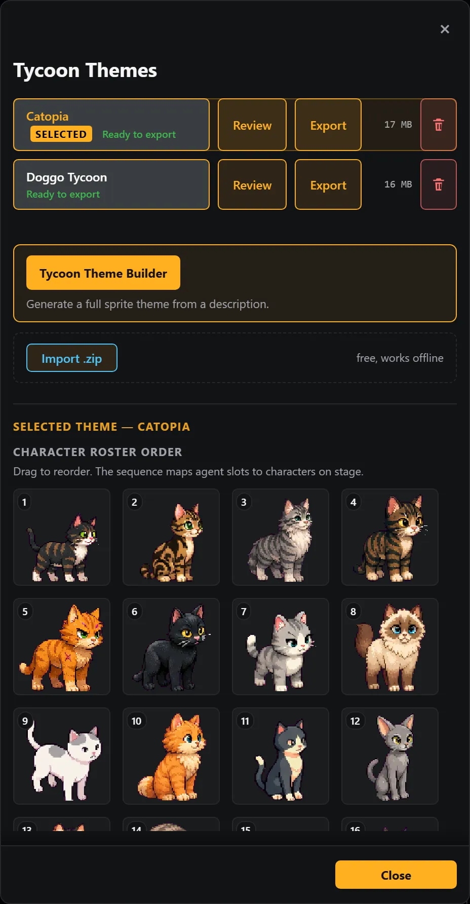
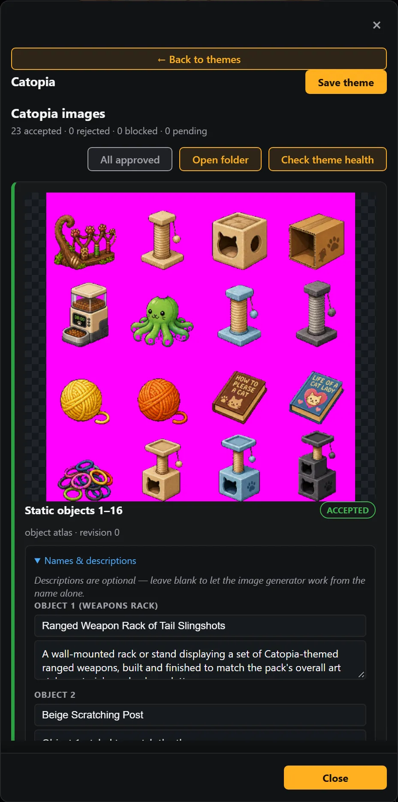
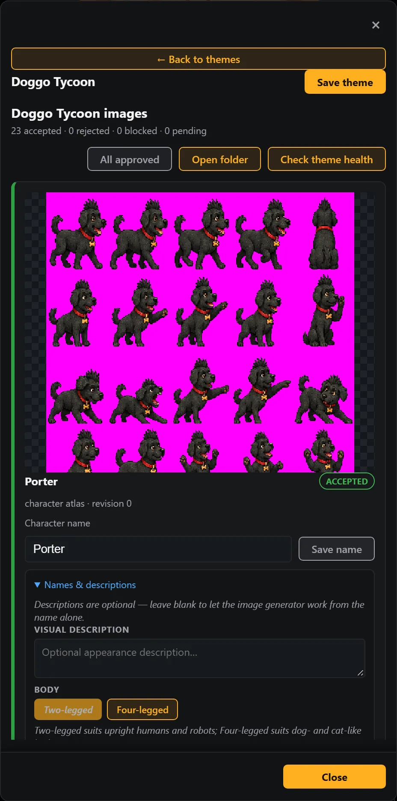
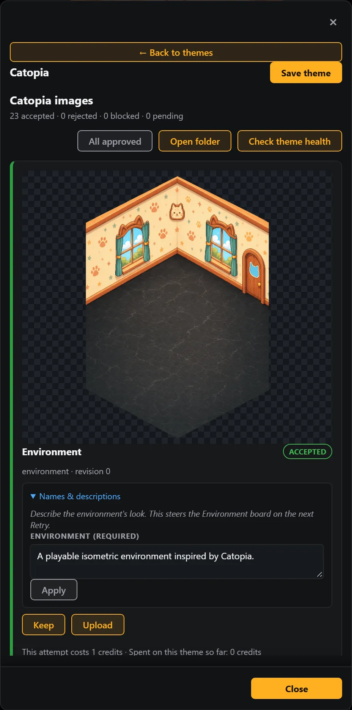

TycoonAgents Handbook / Chapter 09 / Part II · Theme Maker
Where art comes from
Every theme is either one that shipped with the extension, one you generated yourself, or one someone shared with you. Each of those has a different rule about what it's for — this chapter is the short version so you don't accidentally step on someone else's rights, or your own.
The extension ships with a small set of built-in themes. All of them are original artwork created for TycoonAgents. They're ready to use the moment you install, no sign-in or credits required.




More official themes. TycoonAgents publishes additional official themes, made and provided by TycoonAgents, in the official themes repository at https://github.com/Corsair-Studios/tycoonagents-themes. Each theme is a self-contained .zip. The extension never downloads themes on its own, so you fetch the file yourself and import it:
Open the repository's Releases page and download the .zip for the theme you want.
Open the TycoonAgents panel and go to the Theme Picker.
Choose Import .zip and select the file you downloaded. The theme is added to your local theme library, and you can pick it like any other theme.
Once you've signed in and have credits (Chapter 05), you can generate as many personal themes as you like. Each one is stored on your machine in your editor's global storage — nothing you generate is uploaded anywhere by the extension itself.
Note
Personal use of any theme style — including one built around a franchise or character you like — is fine. The line that matters is sharing it, covered next.
| Theme type | Redistribution |
|---|---|
| Original artwork (your own style, no third-party references) | Shareable — the official theme repository only accepts original work |
| Themes referencing a third-party franchise, brand, or character | Personal use only — do not redistribute |
Sharing happens through a separate community themes repository (not the extension itself), organized one pull request per theme folder. Whoever uploads a theme is responsible for making sure it's their own original work, and takedown requests are honored.
The Theme Picker has both directions of this working today:
Export. Pick a theme and choose Export .zip to save it as a single archive file you can hand to someone else.
Import. Choose Import .zip in the Theme Picker, pick a theme archive someone gave you, and it's added to your local theme library (or replaces a matching one, if you confirm).
Tip
Import/export moves a theme as a file between two installs — it doesn't publish or fetch anything over the network on its own. If a theme you're importing references third-party IP, remember it's for your personal use, not further redistribution.